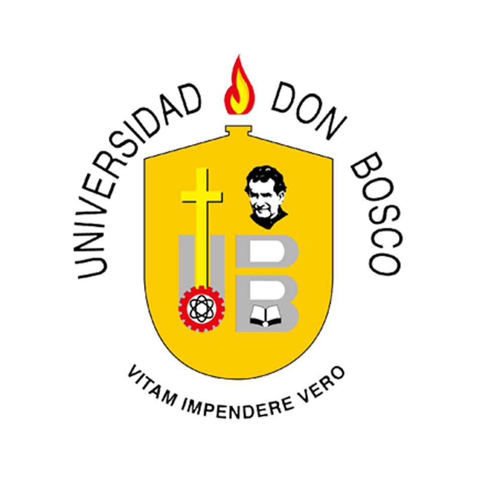

Jose Daniel Menjivar Lemus, nacio en San Salvador , El Salvador el 20 de noviembre de 2002.
Fotografia de Daniel en el año 2020
Daniel se crio con su padres, su padre David Amadeo Menjivar Alvarez y su madre Iris Marisol Lemus Duron
y tiene 2 hermanos mayores. Daniel tuvo una infancia muy buena, empezo con sus estudios a los 3 años
en el Kinder Maria de Baratta, donde curso desde kinder 4 hasta parvularia, despues de graduarse del kinder,
empezo su educacion basica en el Colegio Cristobal Colon , entro en el año 2010 a dicho colegio, donde estuvo desde
primer grado hasta bachillerato.
Donde aprendio muchas cosas y donde especialmente, le llamo la atencion la informatica. Daniel era un excelente
estudiante y cuando se graduo de bachillerato, recibio 2 de medallas por su desempeño en su ultimo año de bachillerato general que fue en el año 2020.
Despues de graduarse de bachillerato, en el año 2021 entro a la Universidad Don Bosco donde sigue actualmente y que esta
estudiando ingeneria en ciencias de la computacion.

Los pasatiempos favoritos de el son jugar videojuegos y mas en la playstation, cuales sus juegos
favoritos son: Rocket League, GTA V, Apex Legends otro pasatiempo que tiene el es el practicar deporte, cuando tenia 7 años practicaba mucho futbol en una
academia que incluso fue a jugar a Guatemala en 2 ocasiones. Actualmente esta practicando en tocar piano, que es una de las cosas que mas le gusta hacer, otra cosa
que le gusta hacer es de escuchar musica, sus artistas favoritos son: Post Malone, Kanye West,Drake,The Weeknd entre otros.

Actualmente se encuentra con viviendo sus padres y hermanos y vive contento y estudiando la carrera que el quiso.